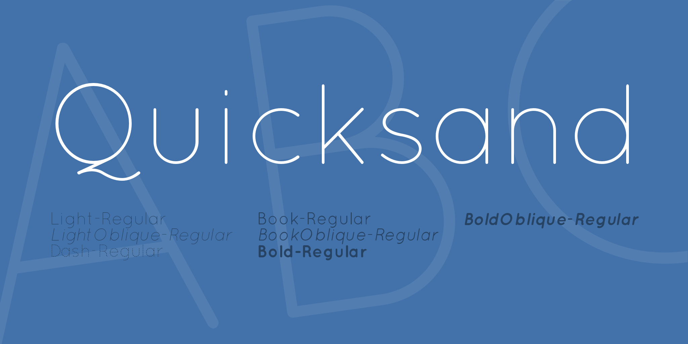
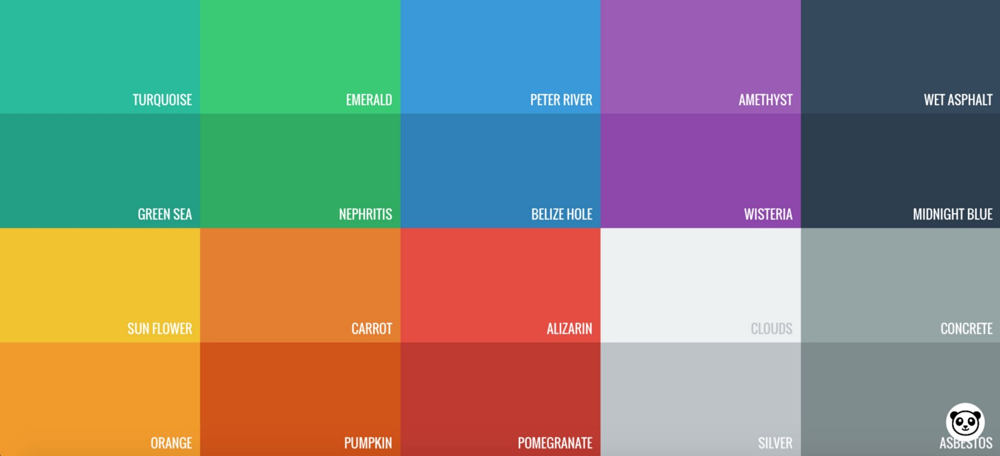

Flat Design
Flat design is a minimalistic design style, commonly used with user interfaces.
The style gets it’s name from the shapes used; two dimensional, flat. In other words, it is designed with no or little depth in mind, very limited usage of shadows or other embellishments. While flat design may lack elements of realism, it makes up for it by being (if used correctly) user friendly and accessible. The style makes it easier to convey crucial information swiftly, while retaining visual appeal and aesthetics. The designs are sharp and clear, therefore look good even on bigger screens, in higher resolution.

Typography of flat design
Due to the simplicity of flat design, typography plays a very important role. Selecting an embellished, flashy font will undermine the overall design, so a simple sans serif type family should be used. It has to be easy to read, contrasting color.
Usability
One of the other key elements of flat design is usability and the emphasis on it. That’s why, if an element serves no purpose, under flat design idea it is viewed as an unnecessary distraction. That’s why flat design is easy to look at, therefore it is easy to navigate and find the information needed in a shorter period of time. Basically, flat design reverts to the fundamentals; where content is judged by how well it works, and not necessarily by how good it looks.
Color palette
Flat design usually relies on bold and bright colors. Saturated colors, that pop out of the screen, work with both; light and dark backgrounds. The trend in general is to use contrast to make crucial parts stand out, not using any outlines. Monotone pallets are gaining popularity as well, using the same base color and different variations of it.
Criticism
While flat design should be accessible, easy to use, some designers become overly focused on aesthetics, in turn, compromising the usability of the design. Since everything is flat, it may be hard to tell for a user what is or isn’t clickable on desktop or mobile platform. The pursuit of simplicity can hurt the usability. Another possible problem may be the lack of originality, the flat design sites and apps have tendency to look very similar to each other, and by the style standards there isn’t much room for unique qualities.